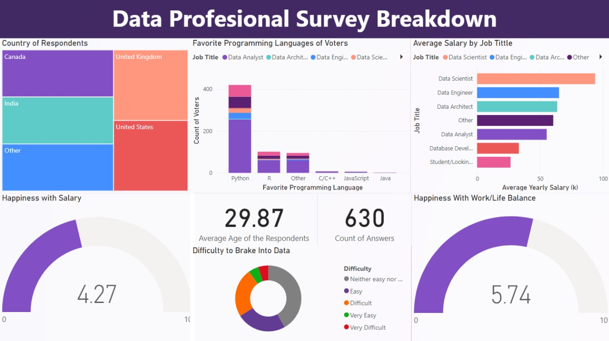

SQL & Power BI project
Business Questions:
Which holidays affect weekly sales the most?
Which stores in the dataset have the lowest and highest unemployment rate? What factors do you think are impacting the unemployment rate?
Is there any correlation between CPI and Weekly Sales? How does the correlation differ when the Holiday Flag is 0 versus when the Holiday Flag is 1?
Why do you think Fuel Price is included in this dataset? What conclusions can be made about Fuel Price compared to any of the other fields?
Original dataset: https://www.kaggle.com/datasets/mikhail1681/walmart-sales
1. Build the data base
2. Data preprocessing
- a. Create a Backup b. Delete Duplicates
c. Standardize the data
- Data is sorted first by store number (ascending) and second by date (ascending)
- Date is in the format MM-DD-YYYY
- Weekly Sales is rounded to the nearest 2 decimal places
- Temperature is rounded to the nearest whole number
- Fuel Price is rounded to the nearest 2 decimal places
- CPI is rounded to the nearest 3 decimal places
- Unemployment is rounded to the nearest 3 decimal places
- Convert Holiday_Flag to int
- Ensure that there is no missing data
d. Remove unnecesary columns or Rows
5. Connect Power BI to the Database
6. Used Power Query to change Date to actual Date format
7. Created visualisations